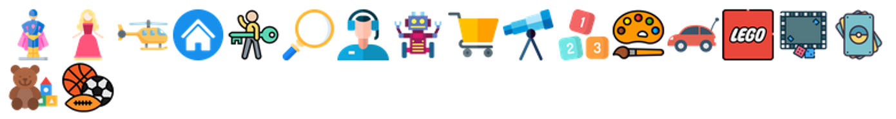

ICONOGRAFÍA
Respecto a la iconografía usaremos iconos para las diferentes categorías de
juguetes, acción, muñecas, construcción, etc., con temática infantil, es decir
iconos vistosos, agradables y coloridos para atraer la atención de los niños.
Además el uso de los iconos con tonalidades pasteles e infantil dará a la página una
fuerte marca de identidad, que reforzará la idea de que es una página de ventas de juguetes
pensada para niños o pre-adolescentes.
